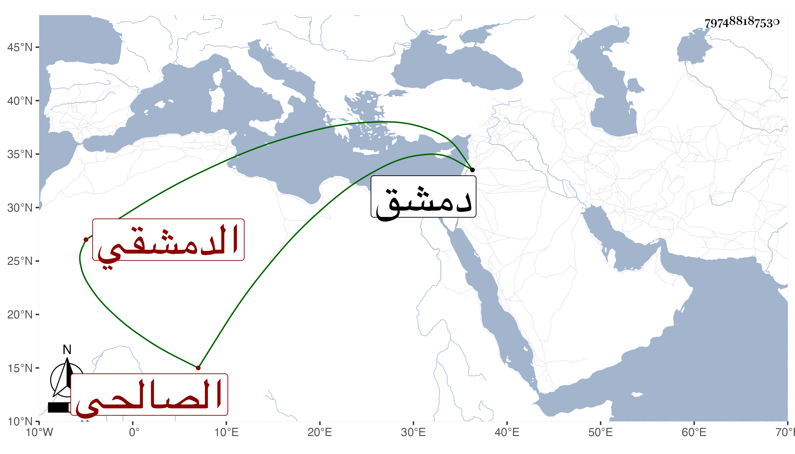

0902Sakhawi.DawLamic.ITO20230111-ara1.EIS1600.797488187530
Biography ID: 797488187530
إبراهيم بن محمد بن أبي بكر بن عمر بن مسلم الصالحي الدمشقي ويعرف بابن المدركل . ولد سنة خمس وثلاثين وسبعمائة وسمع على محمد بن يوسف من رواية المسلسل وعلى زينب ابنة الكمال موافقاتها تخريج البرزالي . وحدث سمع منه شيخنا المسلسل وقال بلفظه المعجرف وقرأ عليه العشرة الثانية من الموافقات قال وأظنه مات في الكائنة العظمى سنة ثلاث يعني بدمشق وتبعه المقريزي فذكره في عقوده ولكنه جزم بتاريخ وفاته .
